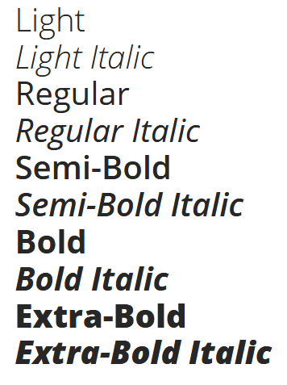

Fonts¶
Font for reading text¶
The font used in the logo’s tagline appears to be Open Sans, so we’ll use this font wherever possible. The family comes in a whole bunch of weights and is very legible, so it works pretty well whether you’re using it for headlines or reading text.
You can download the font family for free on Google Fonts.
Decorative font¶
I have no idea what font was used for the main logotype. If anyone has any idea, let me know!